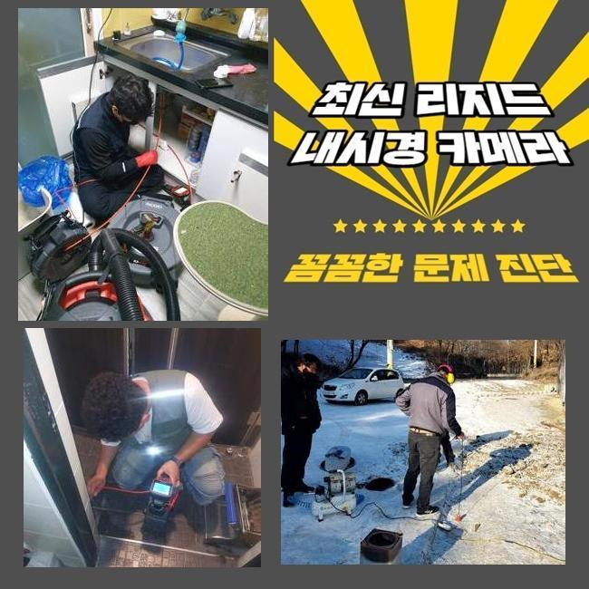
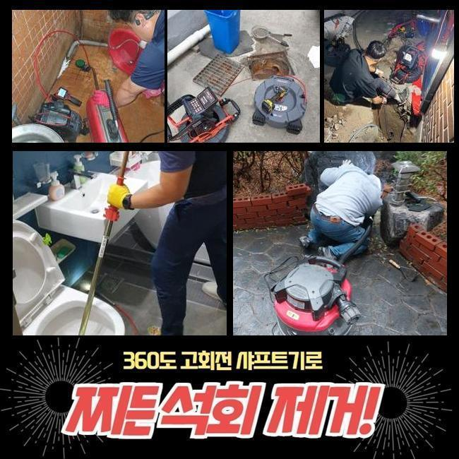
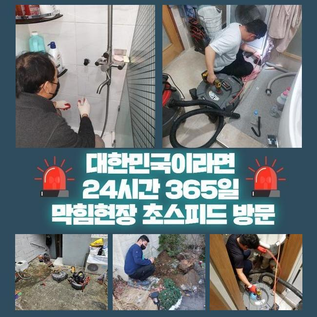
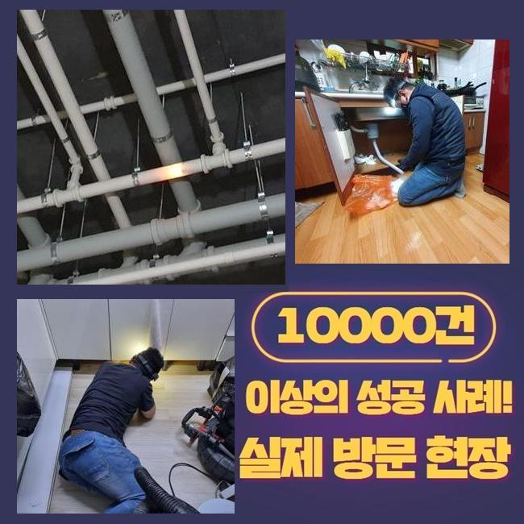
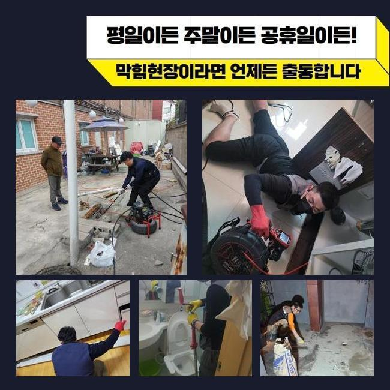
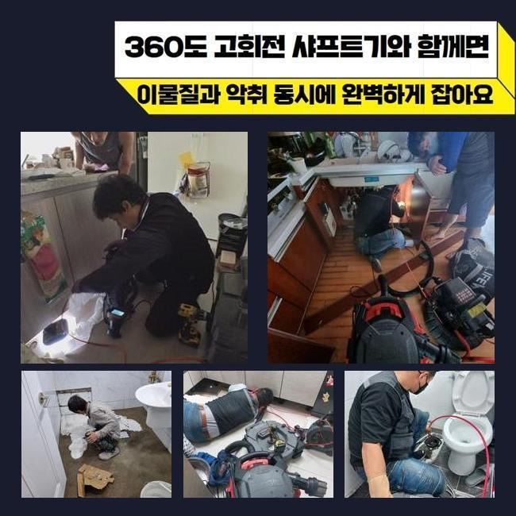

🏠 부천 소사동세탁실역류 약대동 배수로뚫기 배관설비공사
용인 하수구막힘 전문 시공 후기

📋 작업 개요
- 위치: 용인
- 서비스 유형: 하수구막힘, 배관막힘, 누수수리, 역류해결, 뚫는업체, 배관청소, 고압세척, 설비공사
- 작업 일시: 2025. 2. 25. 23:54
- 업체명: 하수구수사대 (010-5615-2118)
🔍 문제 상황
부천 소사동세탁실역류 약대동 배수로뚫기 배관설비공사
2주전에 물막힘이 생겨 불편들을 호소하셨던 고객님에게 전화가 들어왔었는데요
고객분의 경우 배수관에 대한 전문성을 띄고 계시진않았지만 일정 수준의 지식내용은 가진 상태였는데요
고객분은 배수구를 청소시키고 막힌 스팟을 찾아보려 관찰했지만 어디부분이 문제인건지 인지하지 못해 저희업체께 문의하셨던 것이였습니다
계신 곳에 찾아뵈었더니 지속적인 셀프대처로 고생하셨던 것이 한눈에 들어왔는데요
일반인 입장에서는 명확한 이유에 대해 알아내기힘든 사례들이 상당수에요
해당 장소에서 하수관을 점검하니 괄목할만한 요소는 없다고 판단했어요
의뢰자분은 외부하수관에서 원인들이 자리했을 가능성들이 농후하다고 생각했죠
더불어 식물과 나무가 많다면 뿌리등이 배수관으로 침투할수도 있고 잔해물이 흘러들어갈 확률들이 존재합니다
많은 이유로 중앙관로가 막혀버렸을 수 있는데요

🔎 원인 분석
💡 전문가 진단: 정밀 진단 장비를 사용하여 슬러지의 고착 여부를 판명하고 타격/세척 작업을 실시했습니다.
고객께 현상태의 예상되는 까닭을 안내하고 외부라인을 관찰해야된다고 안내했어요
고객도 해당 사항을 듣고난 후 메인 하수 시스템 점검과정에 동의해주었어요
수리를 돌입하고자 여러 준비들을 거쳤어요
하수시스템 정체의 이유들은 특정이 안돼요
배수구가 드러나있다면 이런저런 이물질 등 주위에서 유입된 잔해물이 하수관으로 축적됩니다
더불어 강수상황에 처했을때 바깥쪽 하수시스템들의 실태를 확인하지않을 시 증상은 점점 커질거에요
또한, 나무의 뿌리등이 배수관으로 들어가버리는 사례들도 종종 있죠
배수관을 찌르거나 심하면 파손을 유발하는 트러블까지 발생케하죠
해당 문제에서는 유수가 원활치못해 부차적 문제까지 생기게 될 수 있어요
그밖에 배수관이 노후되거나 손상된 상태에서도 유수가 불가하여 막히는 사태가 발발합니다

🔧 작업 과정
오래되어 하수관이 노후된다면 잔해물이 켜켜히 쌓이는 조건이 만들어집니다
마지막으로서 일반적인 배수장애의 까닭은 적재적소의 점검들을 신경안써서인데요
시기적절하게 체크해주지않으면, 작은 이물이 자리를 잡으면서 막히는 상태가 심각수준으로 치닫을거에요
그래서 밖의 배관실태를 그때그때 체크해보고 청소시키는게 앞서서 조치하는 합리적인 방법들이라 할 수 있겠습니다
수많은 까닭들을 인지하고 선제적으로 대비해주는게 중요하겠습니다
내시경기기로 외부에 위치한 설비의 실태를 체크해보았어요
내시경장비로 확인하니 하수관의 구간별로 이물들과 기름으로 인하여 심각해진 상태가 확인됐죠
이와같이 하수도가 막힌다면 물의 통수가 막혀버려 누수까지 발발하기에 대응을 이행하는게 요구됩니다
상태를 보고 여러 폐기물들이 퇴적된 위치를 목표로 해서 청소해주기로 결정해주었습니다
고수압의 방법을 이용하여 쎈 수압으로 시설물들을 군데군데 세척했습니다
뭉쳐있던 슬러지를 안에서부터 청소하니 막힌상태의 하수가 배출되었는데요
최초에는 잔해들이 빠져나왔고 여러 폐기물들이 빠지며 시간이 흐름에 따라 수월하게 복구되기에 이르렀습니다
물이 원활히 빠지는 형상을 목격하며 의뢰인분까지 해당 과정들을 확인하셨어요
청소들이 진행되고있는 중에 의뢰인분과 얘기하며 잔해물이 쌓이는 까닭들을 말했더니 고객도 궁금하셨던 내용을 물어보셨어요
이로인해 의뢰인분은 관리하는 것의 비중을 인지하셨고 추후에도 정기성을 갖춘 청소들의 불가피함을 공감해주셨어요
끝내 청소들이 종료되고 하수관이 완전히 복구되며 고객분은 배출되는 모습도 확인했습니다


✅ 작업 완료
고객님에게도 결과와 관련한 내용을 말씀드리고 미래에도의 관리방법들까지 안내해드렸어요
때때로 바깥쪽을 점검해주고 상황에 따라서는 전문성을 갖춘 해결들을 꾀하는게 좋은 방법이라고 말씀드렸어요
최종적으로 고객분에게서 고민들을 잠재울 수 있어 안심했습니다
고객분의 문제없는 배수상황에 보탬으로 다가설수있게 때에 맞춰 저희전문진에게 전화주시기 바라요



⚠️ 베란다 누수 및 방수 관리 방법
- ✅ 비가 많이 올 때 창틀 주변이나 아래층 천장에 얼룩이 생기는지 정기적으로 확인해 보세요.
- ✅ 우수관 주변 실리콘 마감이 들뜨거나 깨진 틈새가 있는지 손상 여부를 수시로 체크하세요.
- ✅ 베란다 바닥 타일의 줄눈(메지)이 소실되면 그 틈으로 물이 침투하여 누수가 유발됩니다.
- ✅ 누수 의심 증상 발견 시 방치하면 아래층 손실이 커지므로 즉시 전문가의 진단을 받으십시오.
💡 핵심 정리
- 확실한 장비 작업(내시경 점검 및 샤프트 스케일링)으로 원인을 뿌리 뽑습니다.
- 작업 후 1년 이내에 동일한 부위 재발 시 100% 무상 A/S 서비스를 보장합니다.
- 서울 · 경기 · 인천 전 지역에 24시간 언제든 긴급 출동할 수 있도록 항시 대기 중입니다.
❓ 자주 묻는 질문 (FAQ)
🚨 용인 하수구막힘 문제로 고민이신가요?
정확한 원인 진단과 확실한 시공으로 재발 없는 해결을 약속드립니다.
24시간 긴급 출동 | 서울 · 경기 · 인천 전지역 | 1년 내 재발 시 무상 A/S